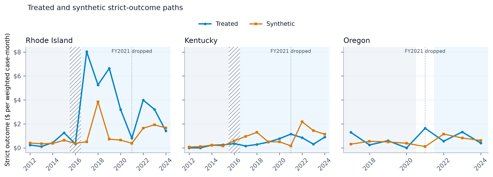
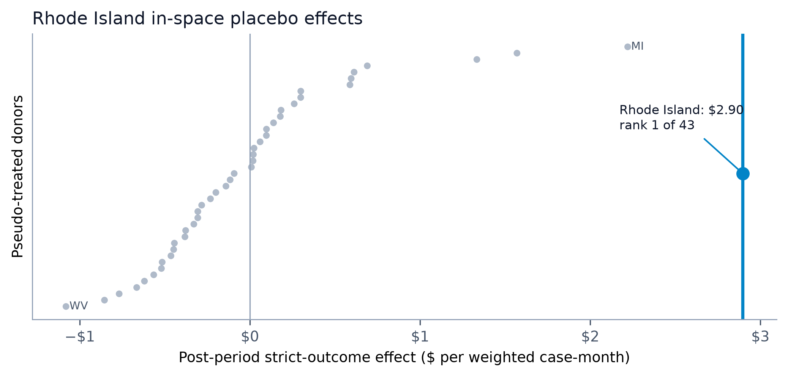
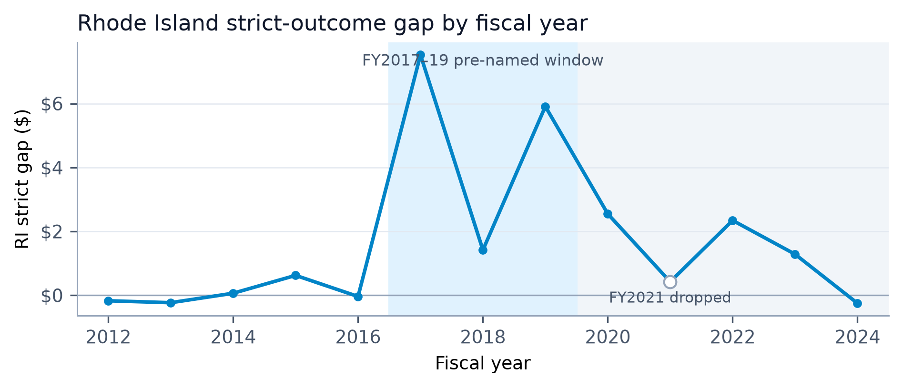
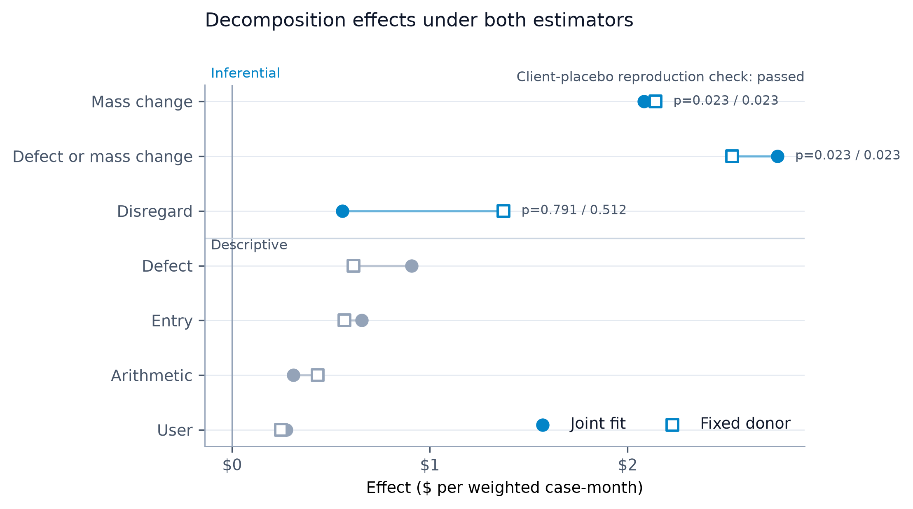

What a system replacement does to measured error: three SNAP eligibility-system migrations in the quality-control record
State reviewers re-work a monthly sample of active SNAP cases, record every dollar paid in error, and code why. Those quality-control files, public back to fiscal 2012, carry error dollars the reviewers attribute to the computing apparatus for every state and year under one federal definition. This paper uses them as an outcome panel for three eligibility-system replacements, Rhode Island’s UHIP (September 2016), Kentucky’s Benefind (February 2016), and Oregon’s ONE expansion (February 2021), each estimated against a synthetic control drawn from states with no recorded migration in a public event registry, with permutation inference and a decision rule frozen before estimation. The estimand is the bundled system replacement as implemented. Rhode Island’s computing-apparatus error dollars rise $2.90 per weighted case-month (permutation p = 0.023, first of 43; a post-results Bonferroni comparison across the three unit tests gives an adjusted p of 0.070) while the client-caused placebo does not fire (p = 0.233), concentrated in fiscal 2017 through 2019, the pre-named consequence window inside the September 2016 to December 2019 interval for which the Food and Nutrition Service later billed the state $37.3 million; Kentucky shows no protocol-defined signal; Oregon’s placebo fires inside the pandemic window and the rule refuses attribution. A second frozen protocol decomposes the Rhode Island signal by cause code: computer-generated mass-change error is the inferential channel that moves, at $2.08 per case-month with the donor refit across all outcomes and $2.14 with the parent’s donor held fixed (p = 0.023 and first of 43 placebo states under both), while information-disregarded error, the other inferential channel, does not separate from the donor under either; worker and data-entry error fall below the count gate and are reported descriptively. The decomposition also shows that the design’s placebo status depends on which outcomes share the donor fit: under the joint refit the client placebo moves to p = 0.023 and the parent rule returns no_protocol_defined_signal for the channel; under a fixed-donor estimator that reproduces the parent’s placebo exactly, the same rule returns signal. Both estimators are reported and neither is privileged.
1 Introduction
Three states replaced the computer systems that determine SNAP eligibility and benefits, and reviewers working a record built for another purpose wrote down what happened next. Every month, state reviewers re-work a sample of active SNAP cases from scratch, record every dollar the state paid in error, and code why. Those quality-control files, public back to fiscal 2012, contain the outcome a migration would move if it moved anything: error dollars the reviewers attribute to the computing apparatus, for every state and year, under one federal definition. This paper takes them as an outcome panel and asks what three eligibility-system replacements, each a bundle of software, process, and staffing changes as the state implemented it, did to measured error.
The events are Rhode Island’s UHIP launch in September 2016, Kentucky’s Benefind launch on February 29, 2016, and Oregon’s ONE expansion to SNAP in February 2021. The paper compares each state with a synthetic control drawn from states with no migration in its event registry, permutes across those states for inference, and froze a decision rule before estimation to name each verdict. The estimand throughout is the bundled system replacement as implemented — software, process, and staffing together. It is never the effect of software, and never the effect of a rules engine.
Rhode Island earns the frozen rule’s signal; Kentucky and Oregon each return no_protocol_defined_signal, Oregon’s a refusal because its client-caused placebo fires inside the pandemic window. A second frozen protocol then splits Rhode Island’s rise by the reviewers’ cause codes and estimates each channel as the QC record classified it, under two estimators: the parent’s, which refits donor weights on every outcome in a run, and a fixed-donor variant that holds the parent’s weights. The two agree on which channel moved and disagree on one verdict field; changing the outcome set that shares the donor fit changes the placebo’s status, and the paper reports that dependence beside its results.
Four limits bound everything below: one treated unit per event, permutation denominators of 35 and 43, cause-code cells that thin to single digits, and a reviewer’s classification standing between the file and the machine.
3 The quality-control record as an outcome source
Every case in the public-use quality-control file carries a sampling weight, a review status, the benefit paid, the dollars paid in error, and up to nine agency-cause codes (FY2024 SNAP QC Technical Documentation: sampling and database scope, printed pp. 6 and 54–55; HWGT, pp. 65–66; STATUS, p. 64; AMTERR, p. 77; the nine AGENCY, ELEMENT, and NATURE slots, pp. 88–90). Error dollars enter as weight times error amount (AMTERR) from active cases (CASE = 1, HWGT > 0) at an adjudicated error status (STATUS 2 or 3); the denominator is the weight of every active case, so the dollar outcomes are dollars per weighted case-month. A total error rate divides the same above-floor dollars by weighted benefits paid (RAWBEN), times 100.
An error counts only above a floor, and the protocols fix that floor in real terms. The official tolerance, the floor of the official rate (Congressional Research Service 2018), ran $50 in FY2012–13, $37 or $38 in FY2014–20, $39 in FY2021, then $48, $54, and $56 (annual SNAP QC Technical Documentation: FY2012 and FY2013 PDFs pp. 128 and 126; FY2014–FY2017 printed p. 5; FY2018 p. 6; FY2019 p. 4; FY2021 p. 6 for FY2020 and FY2021; FY2022 and FY2023 p. 6; FY2024 p. 6). The Rhode Island–Kentucky protocol fixes its floor at the highest real value in that series, FY2012’s $50, or $68.31 in FY2024 dollars; the Oregon protocol fixes $56 in FY2024 dollars. Both floors sit at or above every official tolerance in their panels, so a changing nominal tolerance never defines the outcome.
Reviewers code why each error occurred. Three codes form the strict class this paper calls the computing apparatus: computer programming error (17), computer-generated mass-change error (19), and arithmetic computation error (20). Five form the client-coded placebo (1, 2, 3, 4, 7): information the household did not report, reported wrongly, or withheld, and inaccurate collateral-contact reports, an analysis superclass since no field records a binary responsibility. The convention credits the whole case: a strict code in any slot puts the case’s entire weighted error dollars into the strict outcome, and because classes overlap, one case can count in both. A reviewer assigns each cause code; the code records how the QC record classified the failure, and no field records what the system mechanically did.
The strict codes support a FY2012 start and carry a semantic ceiling. All nine agency slots and all three strict codes appear in every file from FY2012 through FY2024; numeric presence does not prove the codes kept one meaning, and the FY2024 technical documentation reports minor revisions to the agency, element, and nature codes (FY2024 SNAP QC Technical Documentation, printed p. 3). Code 22 first appears in FY2023 and codes 23 through 25 in FY2024, so the strict class rather than the broad agency class serves as the historical outcome. The FY2020 file combines two period files, 18,319 and 8,793 rows, into 27,112; the FY2021 file holds 9,832 rows, a pandemic-partial year.
4 Events and registry
Rhode Island cut over to UHIP, later RIBridges, statewide in September 2016, one year after the July 2015 plan; Deloitte built it.1 The application backlog reached about 15,000 at its peak, and the Food and Nutrition Service later billed the state $37,343,809.68 for SNAP overpayments covering September 2016 through December 2019.
Kentucky launched Benefind, Deloitte’s integrated SNAP and Medicaid platform costing about $101.5 million, on February 29, 2016.2 After launch the state sent about 25,000 erroneous cancellation notices and worked a backlog of about 50,000 cases, and it extended SNAP recertification from six to twelve months, a mitigation inside the estimated bundle.
Oregon expanded ONE Eligibility from Oregon Health Plan eligibility to SNAP and other benefit programs in February 2021.3 The system runs on code Oregon acquired at no cost from Kentucky — the Benefind lineage — with about $416 million spent to redesign and maintain it and Deloitte holding the support contract. A 2024 state audit found the automated part working well, with input errors in 11 of 40 sampled SNAP cases.4 The registry dates the expansion from one state source and a legislative update; it records no launch-specific problem coverage, and a search (2026-08-16) located no ONE-specific federal SNAP billing record.
The registry grades each entry by its dating evidence: multi-source when two or more independent public sources corroborate the date, single-source when one credible source does, and candidate when the event is known but its date remains unverified. Nine states carry an entry (Table 1); every one leaves every donor pool. A source pass on 2026-08-16 verified the three former candidates with primary records — New Mexico’s legislative program evaluation, Indiana’s cancellation record, and Colorado’s state-audit and litigation record — upgraded Georgia from single-source to multi-source with rollout coverage, and located no public federal SNAP billing record for Kentucky or Oregon.
| State | System (vendor) | Go-live (precision) | Confidence |
|---|---|---|---|
| RI | UHIP (Deloitte) | September 2016 (month) | multi-source |
| KY | Benefind (Deloitte) | February 29, 2016 (day) | multi-source |
| OR | ONE Eligibility (unrecorded) | February 2021 (month) | single-source |
| GA | Georgia Gateway (Deloitte) | February 6, 2017 pilot (day); waves through 2017, statewide | multi-source |
| NC | NC FAST | May 2012–March 2013 county rollout (month) | multi-source |
| FL | ACCESS modernization | reported start 2022; unverified | candidate |
| NM | ASPEN (Deloitte) | July 22, 2013 pilot; waves to January 21, 2014 (day) | multi-source |
| IN | FSSA modernization (IBM/ACS) | 2007 rollout; canceled October 2009 (year) | multi-source |
| CO | CBMS (EDS) | September 1, 2004 (day) | multi-source |
5 Design
The authors froze two protocols before estimation, and together they fix everything the three estimates depend on: one for Rhode Island and Kentucky, two treated units on a FY2012–24 panel, and one for Oregon alone on FY2017–24 (Table 2). The estimand for every event is the bundled system replacement as implemented: contemporaneous process, staffing, and mitigation changes sit inside it, and the design isolates no component.
For each treated state, nonnegative donor weights summing to one minimize the pretreatment squared distance jointly across three outcomes (Abadie et al. 2010; Abadie 2021). The three are strict computing-apparatus dollars per case-month, the fixed-floor total error rate, and the client-coded placebo; the estimator scales each by its donor-state pretreatment standard deviation before the fit. The effect for each outcome is the mean post-period gap between state and synthetic donor minus the mean pre-period gap.
The estimator infers by permutation in space. The estimator refits every donor state as pseudo-treated on the remaining donors under the identical year assignment and ranks the absolute treated effect among the absolute placebo effects, ties counting against the signal. The p-value is (1 + exceedances)/(1 + placebos): 42 placebos for Rhode Island and Kentucky, so the smallest p is 1/43 = 0.023, and 34 for Oregon, 1/35 = 0.029. These p-values compare the estimate with placebo runs inside a pre-named pool and carry no large-sample standard error. The Rhode Island–Kentucky pool holds every state and the District of Columbia less the nine registry states. The Oregon protocol also removes the jurisdictions on the FY2024 or FY2025 statutory delay rosters, a pre-named set with high recent measured error rates; because those rosters rest partly on rates measured after the launch, the Oregon estimate is conditional on the pre-named pool.
A unit earns the verdict “signal” only when its strict-outcome permutation p falls below 0.10 and its client-placebo p stays at or above 0.10; otherwise the verdict is “no protocol-defined signal”, and the total-rate outcome cannot change either. The pooled statistic, the equal-weight mean of the Rhode Island and Kentucky effects, ranks against pooled placebos built the same way, and its verdict does not replace the unit verdicts. Because FNS billed Rhode Island through December 2019, the protocol names FY2017–19 as the consequence window and reports the mean strict gap there against the later post-years, FY2020 and FY2022–24, a descriptive and verdict-inert check; the billing record enters no estimate.
The three unit-level tests form a family, and neither parent protocol corrects across them; each unit carries its own verdict at 0.10 with the placebo condition, and the pooled Rhode Island–Kentucky statistic aggregates two units into one test rather than correcting the family. The authors declared a family disclosure after the results and before this manuscript (analysis/EVENT_FAMILY_ADDENDUM.md and its correction); it computes from the committed ranks alone. Bonferroni across the three unit tests holds under any dependence among them and gives Rhode Island an adjusted strict p of 3 × 1/43 = 0.070. Holm returns the same rejection for Rhode Island and stops at Kentucky (0.302 against 0.05). A six-test family that adds the decomposition’s three channel tests has a threshold of 0.10/6 = 0.0167, below both attainable floors (1/43 = 0.0233 and 1/35 = 0.0286), so no result in this paper could reach it. The channel tests condition on Rhode Island’s signal, ask a second question, and carry their own three-way adjustment in their frozen protocol. Rhode Island and Kentucky share one donor pool and panel, and Oregon’s pool overlaps both, so no product of unit-level probabilities describes the design’s joint false-positive rate. The unit verdicts remain the frozen verdicts.
The Rhode Island–Kentucky protocol excludes FY2016 as a transition year, since Kentucky’s February 29 launch leaves seven exposed months in that fiscal year and Rhode Island’s September launch at most one, and it drops FY2021 as pandemic-partial. The Oregon protocol drops FY2021, where the February launch leaves four fiscal months before it and eight after. The sensitivities include FY2021 as post (treated, for Oregon), drop FY2020 and FY2021 together, and treat FY2016 as post for Kentucky and as pre for Rhode Island.
| Rhode Island and Kentucky | Oregon | |
|---|---|---|
| Protocol | analysis/RIKY_EVENT_STUDY_PROTOCOL.md |
analysis/EVENT_STUDY_PROTOCOL.md |
| Panel; pre; post | FY2012–24; FY2012–15; FY2017–20 and FY2022–24 | FY2017–24; FY2017–20; FY2022–24 |
| Floor, FY2024 dollars | $68.31 | $56 |
| Donor pool; smallest p | 42 jurisdictions; 1/43 | 34 states; 1/35 |

6 Rhode Island
Rhode Island’s computing-apparatus error dollars rise $2.90 per weighted case-month against its synthetic donor after the September 2016 launch, and the client-caused placebo does not fire. The strict effect ranks first of 43 (p = 0.023), the smallest p-value a 42-state donor pool can return. The client placebo moves +$3.96 and ranks tenth (p = 0.233). The frozen rule requires strict p below 0.10 and client p at or above 0.10; the verdict is signal. The strict p sits at the floor a 42-donor pool allows; adjusted for the three unit tests it is 0.070 (design section). Before the launch the synthetic Rhode Island tracks the state to within $0.34 per case-month on the strict outcome (pre-RMSPE 0.345, the pre-period root-mean-square gap). Its weights fall on West Virginia (0.358), Michigan (0.354), Connecticut (0.193), Vermont (0.055), and the District of Columbia (0.041), fit jointly on the strict, total-rate, and client outcomes.

The reconstructed total error rate rises 2.56 percentage points (p = 0.233); the protocol names it verdict-inert. The strict effect keeps its sign and size in every pre-named sensitivity, from +$2.58 with the pandemic-partial FY2021 file counted as post to +$3.10 with FY2016, the launch year, counted as pre (Table 3).
The rise concentrates in the pre-named consequence window. The mean strict gap runs +$4.95 per case-month across FY2017–19 and +$1.48 across FY2020 and FY2022–24, a difference of +$3.47. FNS billed the state $37,343,809.68 for SNAP overpayments from September 2016 through December 2019, an interval that also touches FY2016 and FY2020. The billing record played no part in the estimate, the protocol names this profile descriptive and verdict-inert, and the profile neither confirms the estimate nor the billing; it reports where in time the estimated gap sits.

signal.
| Outcome, specification | Effect | Pre-RMSPE | Rank | p |
|---|---|---|---|---|
| Strict computing-apparatus dollars (codes 17, 19, 20), primary | +2.897 | 0.345 | 1/43 | 0.023 |
| Client-caused dollars (codes 1, 2, 3, 4, 7), placebo | +3.964 | 0.363 | 10/43 | 0.233 |
| Total error rate, percentage points | +2.565 | 0.918 | 10/43 | 0.233 |
| Strict, FY2020 and FY2021 dropped | +2.967 | — | — | — |
| Strict, FY2021 counted as post | +2.579 | — | — | — |
| Strict, FY2016 counted as pre | +3.097 | — | — | — |
7 Kentucky
Kentucky’s computing-apparatus error dollars fall $0.58 per weighted case-month against its synthetic donor after the February 29, 2016 Benefind launch (rank 13 of 43, p = 0.302). The verdict is no_protocol_defined_signal, and it turns on the strict p-value alone. The client placebo moves −$4.53 (rank 5 of 43, p = 0.116) and stays at or above the 0.10 the rule requires; the total error rate falls 3.70 percentage points (p = 0.093) and cannot change the verdict. The pre-launch fit is the tightest of the three events, pre-RMSPE 0.079, on weights led by Connecticut (0.317), the District of Columbia (0.230), Delaware (0.192), and New York (0.180). The sensitivities keep the sign and stay small, from −$0.39 to −$0.73 (Table 4).
A no_protocol_defined_signal verdict states that computing-apparatus error dollars did not separate from the donor path at the finest distinction this design can draw. It says nothing about how the launch went. The event registry documents about 25,000 erroneous cancellation notices, a case backlog near 50,000, and a recertification-interval extension from six to twelve months in the launch year. The registry search located no federal billing record for the launch. The outcome counts error dollars on active, adjudicated cases; it holds no closed case and no waiting time, and the null is a statement about that outcome and nothing wider.
no_protocol_defined_signal. Donor weights CT 0.317, DC 0.230, DE 0.192, NY 0.180, MI 0.044, IL 0.023, SD 0.013.
| Outcome, specification | Effect | Pre-RMSPE | Rank | p |
|---|---|---|---|---|
| Strict computing-apparatus dollars, primary | −0.584 | 0.079 | 13/43 | 0.302 |
| Client-caused dollars, placebo | −4.535 | 0.491 | 5/43 | 0.116 |
| Total error rate, percentage points | −3.695 | 0.328 | 4/43 | 0.093 |
| Strict, FY2020 and FY2021 dropped | −0.730 | — | — | — |
| Strict, FY2021 counted as post | −0.385 | — | — | — |
| Strict, FY2016 treated | −0.538 | — | — | — |
8 Oregon
Oregon’s client-caused placebo fires, and the frozen rule refuses attribution. Against a synthetic Oregon drawn from a 34-state pool, computing-apparatus error dollars move −$0.20 per case-month after the February 2021 ONE expansion (rank 25 of 35, p = 0.714). Client-caused error dollars rise $10.53 (rank 1 of 35, p = 0.029, the floor of a 34-state pool), and the total error rate rises 5.76 percentage points (p = 0.029). The verdict is no_protocol_defined_signal. A client p below 0.10 blocks a signal whatever the strict outcome does, and here the strict outcome does not move either. Iowa carries 0.673 of the donor weight, Connecticut 0.187, Wisconsin 0.116, and Missouri 0.025; the strict pre-RMSPE is 0.550.
The launch shares its calendar with the pandemic. Oregon’s panel runs FY2017–24 with pre years FY2017–20 and post years FY2022–24; the primary drops FY2021, a 9,832-row pandemic-partial file whose fiscal months split four before the February launch and eight after. The two pandemic sensitivities move the strict effect to +$0.21 and −$0.17 and leave the client gap above $9 in both (Table 5). Client-coded error dollars rose in Oregon relative to its donors across that window. Whether the expansion or the pandemic-era changes that share its dates moved them, the design cannot separate, and the rule refuses. The 34-state pool conditions the result; the protocol pre-named its delay-roster and registry exclusions.
no_protocol_defined_signal, placebo fired.
| Outcome, specification | Effect | Pre-RMSPE | Rank | p |
|---|---|---|---|---|
| Strict computing-apparatus dollars, primary | −0.200 | 0.550 | 25/35 | 0.714 |
| Client-caused dollars, placebo | +10.534 | 1.225 | 1/35 | 0.029 |
| Total error rate, percentage points | +5.757 | 0.721 | 1/35 | 0.029 |
| Strict / client, FY2021 counted as treated | +0.208 / +9.050 | — | — | — |
| Strict / client, FY2020 and FY2021 dropped | −0.171 / +10.175 | — | — | — |
9 Pooled inference
The pooled Rhode Island–Kentucky statistic is the equal-weight mean of the two state effects: +$1.16 per case-month on the strict outcome (rank 4 of 43, p = 0.093) and −$0.29 on the client placebo (rank 43 of 43, p = 1.0). The unit rule, applied unchanged to the pooled strict and client statistics, returns signal. Three of the 42 placebo statistics match or exceed the pooled strict effect in absolute value. The pooled client effect is the smallest of all 43 because the two states’ client movements, +$3.96 and −$4.53, nearly cancel. The total rate falls 0.57 percentage points (p = 0.744) and cannot change the verdict.
The pooled verdict stands apart from the two unit verdicts. It averages a +$2.90 signal with a −$0.58 no_protocol_defined_signal; it neither upgrades Kentucky nor averages away Rhode Island’s concentration in FY2017–19. It answers one question, whether the two 2016 launches together moved computing-apparatus error dollars against a common pool.
10 Decomposing the Rhode Island signal
The reviewers’ cause codes split the strict outcome into channels, and a second frozen protocol estimates each channel against a synthetic Rhode Island. Seven channels follow the codebook: programming defect (code 17), computer-generated mass change (19), arithmetic (20), user error (21), data entry (18), information disregarded (12), and recertification (23–25). The protocol pre-names one composite, defect-or-mass-change (17 and 19). A reviewer’s classification defines every channel, so the estimates describe how the QC record classified the failures, not what the system mechanically did.
A count gate fixes which channels receive inference. Rhode Island’s adjudicated error cases number 325, 206, and 482 in FY2017, FY2018, and FY2019; a channel is inferential only if its code appears on at least 30 of them in each year. Mass change (139, 93, 98), information disregarded (84, 51, 137), and the composite (183, 105, 119) clear the gate. Programming defect (44, 12, 21) fails FY2018; arithmetic (7, 3, 14), user error (1, 4, 8), and data entry (5, 13, 18) fall well short. Recertification records zero presence in every Rhode Island year, its codes first appear in the FY2024 file, and the channel receives no fit. Inferential channels receive the parent’s permutation inference and two verdicts. The parent rule returns signal when channel p is below 0.10 and the run’s client placebo p is at or above 0.10; the family-adjusted rule for the three channels tested returns signal_family_adjusted when p is below 0.10/3. Descriptive channels receive effect sizes and paths, no p-values, and no verdict.
The inherited estimator fits one set of donor weights on all the outcomes in a run at once. The decomposition run therefore fits its synthetic Rhode Island on the seven estimable channel outcomes and the client placebo together. That fit lands on Ohio (0.306), South Dakota (0.301), Michigan (0.132), Maryland (0.131), Connecticut (0.074), and the District of Columbia (0.057); the parent’s landed on West Virginia and Michigan. On identical data the client placebo, the same outcome the parent ran, moves from +$3.96, p = 0.233, rank 10 of 43 under the parent’s fit to +$5.64, p = 0.023, rank 1 of 43 under the joint fit. Placebo status in this design depends on which outcomes share the donor fit. Under the parent rule the fired placebo blocks every joint-fit channel from signal, including mass change at +$2.08 (p = 0.023, rank 1 of 43) and the composite at +$2.76 (p = 0.023, rank 1 of 43). Both carry signal_family_adjusted, whose rule tests the channel p alone. Information disregarded moves +$0.56 (p = 0.791, rank 34 of 43).
A sibling protocol, frozen 2026-08-16 before its estimation, specifies a fixed-donor estimator. It fits the weights once on the parent’s three outcomes and holds them for every channel and for the client placebo; the synthetic Rhode Island does not move between outcomes. Its pre-registered check requires the client placebo to reproduce the parent’s exactly, and it does: +$3.964, p = 0.233, rank 10 of 43. With the parent’s placebo in place, mass change is +$2.14 (p = 0.023, rank 1 of 43), signal and signal_family_adjusted. The composite is +$2.53 (p = 0.023, rank 1 of 43), signal and signal_family_adjusted. Information disregarded is +$1.37 (p = 0.512, rank 22 of 43), no_protocol_defined_signal and no_family_adjusted_signal. The descriptive channels stay small under both fits, none above $0.91 (Table 6). The mass-change gap concentrates in FY2017–19 under both estimators, +$3.73 against +$0.96 in the later post years under the joint fit and +$4.06 against +$1.06 under the fixed donor, a profile the protocol names descriptive and verdict-inert.
Both estimators appear in Table 6; the reproduction check links them, and the paper privileges neither. They agree on the ordering: mass change carries the largest inferential portion of the strict-channel rise under both fits, and information disregarded does not separate from its donor under either. They differ on the parent-rule verdict at the same channel p-value, and the difference is the donor fit (analysis/fixed_donor_decomposition_results.json at repository commit 4aafd06).

| Channel (codes) | Joint fit: effect | p (rank) | Verdict, parent / family | Fixed donor: effect | p (rank) | Verdict, parent / family |
|---|---|---|---|---|---|---|
| Client placebo (1, 2, 3, 4, 7): reproduction check | +5.637 | 0.023 (1/43) | placebo fires | +3.964 | 0.233 (10/43) | reproduces parent, PASS |
| Mass change (19) | +2.082 | 0.023 (1/43) | no_protocol_defined_signal / signal_family_adjusted |
+2.142 | 0.023 (1/43) | signal / signal_family_adjusted |
| Defect or mass change (17, 19) | +2.758 | 0.023 (1/43) | no_protocol_defined_signal / signal_family_adjusted |
+2.529 | 0.023 (1/43) | signal / signal_family_adjusted |
| Information disregarded (12) | +0.557 | 0.791 (34/43) | no_protocol_defined_signal / no_family_adjusted_signal |
+1.373 | 0.512 (22/43) | no_protocol_defined_signal / no_family_adjusted_signal |
| Programming defect (17), descriptive | +0.907 | — | — | +0.614 | — | — |
| Data entry (18), descriptive | +0.656 | — | — | +0.567 | — | — |
| Arithmetic (20), descriptive | +0.309 | — | — | +0.433 | — | — |
| User error (21), descriptive | +0.274 | — | — | +0.248 | — | — |
| Recertification (23–25) | 0, no fit | — | — | 0, no fit | — | — |
11 Rhode Island’s post-launch cases
The strict-coded Rhode Island cases carry two more descriptions, each without a comparison unit and each outside inference. The first is the element codes the reviewers record on each error case, counted by case presence: a case counts once for every code it carries, so shares overlap. The FY2017–19 consequence window holds 116 strict-coded cases and the FY2012–15 pre-window 15. Code 364 appears on 63 of the 116 (54.3 percent), 331 on 54 (46.6 percent), 363 on 46 (39.7 percent), and 333 on 26 (22.4 percent); the FY2024 codebook labels 364 as the standard utility allowance, 331 as RSDI benefits, 363 as the shelter deduction, and 333 as SSI or state SSI supplement (FY2024 SNAP QC Technical Documentation, printed pp. 89–90; the same labels appear in the FY2015 documentation, PDF pp. 108–109), and the semantic-stability caveat above applies. Among the 15 pre-launch cases the leaders are 331 (7 cases), 365 (5), and 364 (3), too few for a rate comparison. The code inventory differs slightly between windows: 213 and 225 do not appear in the FY2012–15 inventory, 212 and 222 do not appear in the FY2017–19 inventory, and the comparison keeps the 43 codes present in both.
The second layer dates each case’s most recent certification. YRMONTH − LASTCERT, the review month minus the file’s months-since-last-certification field, places that certification before or on/after the September 2016 go-live; CERTMTH measures a certification period’s length and does not date it. Of the 116 consequence-window cases, 39 carry a certification recorded before the go-live and 77 on or after it, with none unclassifiable. The 39 hold $5,710,151.19 of weighted error dollars (34.4 percent); the 77 hold $10,874,154.55 (65.6 percent) of the $16.58 million the window’s strict outcome carries. The split reads the recorded vintage of the certification and nothing about conversion status: whether a given case was converted from the prior system or newly entered, the file does not say.
The channels credit whole cases. The strict outcome credits a case’s entire weighted error once when any cause-code slot carries a strict code. Each channel credits the entire case when its own code is present, so channel sums exceed the strict outcome wherever a case carries two strict codes. Seven such cases in FY2017, four in FY2018, and two in FY2019 add $759,868.20, $593,218.52, and $187,891.02 of duplicate credit to the channel sums. The strict outcome itself is $6,915,111.64 in FY2017 against $404,871.50 in FY2016.
12 Artifacts and reproduction
Every number in this paper reads from a committed artifact in the PolicyEngine/snap-qc-sim repository, and a fast test locks each quoted value to its artifact. The parent event studies live in analysis/riky_event_study_results.json (Rhode Island, Kentucky, and the pooled statistic; generator analysis/event_study.py; protocol analysis/RIKY_EVENT_STUDY_PROTOCOL.md; locks in tests/test_riky_event_study.py) and analysis/event_study_results.json (Oregon; protocol analysis/EVENT_STUDY_PROTOCOL.md; locks in tests/test_event_study.py). The decomposition lives in analysis/uhip_decomposition_results.json (generator analysis/uhip_decomposition.py; protocol analysis/UHIP_DECOMPOSITION_PROTOCOL.md, SHA-256 ffbf63b1…; locks in tests/test_uhip_decomposition.py) and the fixed-donor run in analysis/fixed_donor_decomposition_results.json (generator analysis/fixed_donor_decomposition.py; protocol analysis/FIXED_DONOR_PROTOCOL.md, SHA-256 80dad3c0…; locks, including the reproduction check, in tests/test_fixed_donor_decomposition.py). Event dates and sources sit in analysis/system_migrations.json; the coding audit and tolerance series in analysis/coding_consistency.json; cause-code labels in analysis/cause_shares.json; the event-family multiplicity disclosure in analysis/EVENT_FAMILY_ADDENDUM.md with EVENT_FAMILY_ADDENDUM_CORRECTION.md (post-results reporting commitment; arithmetic on committed ranks; no re-estimation).
The tests that lock committed values run in the repository’s pinned environment (uv run --frozen --extra dev --extra analysis pytest). Full regeneration from raw files needs the FY2012–24 SNAP QC public-use files, which the repository does not distribute; it commits their SHA-256 hashes and loaders, the regeneration tests skip when the hash-audited local cache is absent, and they compare values, not bytes, when it is present. The paper’s tables were generated from the artifacts at repository commit 4aafd06; revision 3 leaves every quoted value unchanged.
13 Data availability
The FY2012–24 SNAP quality-control public-use files and their technical documentation are public: USDA’s Food and Nutrition Service distributes them through the SNAP QC database site (https://snapqcdata.net/datafiles) alongside the annual payment-error-rate releases (https://www.fns.usda.gov/snap/qc/per). The repository commits the SHA-256 hash of every raw file it reads, so a reader can confirm they hold the same bytes this paper consumed. Everything else — event registry, coding audit, protocols, estimation artifacts, figures, and the tests that lock quoted values — ships in the repository itself.
14 Limitations
One treated state per event, and two in the pool, bound what any test here can resolve. The design ranks each estimate among placebo runs on a named donor set: 42 donors for Rhode Island and Kentucky, 34 for Oregon. The smallest p-value the design can return is 1/43 = 0.023 or 1/35 = 0.029, and Rhode Island’s strict estimate and Oregon’s client-caused placebo both sit at that floor. Each p-value conditions on the pool and carries no large-sample standard error. The three unit tests carry no pre-registered familywise correction; the family disclosure was declared after the results, and the design section reports its Bonferroni and Holm arithmetic.
The decomposition runs on 325, 206, and 482 adjudicated Rhode Island error cases in fiscal 2017 through 2019. The protocol admits a channel to inference only when its code appears at least 30 times in each year. Mass-change (139, 93, 98), information-disregarded (84, 51, 137), and a defect-or-mass-change composite pass. Program defect (44, 12, 21), data entry (5, 13, 18), arithmetic (7, 3, 14), and user error (1, 4, 8) appear as effect sizes without p-values. Recertification codes 23 through 25 first appear in fiscal 2024, so that channel has no cases in the Rhode Island window.
The channels describe how the QC record classified the failures. Nothing in the file observes the system; a reviewer read each case and chose a code. This paper groups five codes into the client-caused class; the file has no binary responsibility field. The code-semantics bounds stated with the outcome definitions apply to every channel: numeric presence across fiscal 2012–2024 does not establish unchanged meaning. The element and certification-vintage layers describe Rhode Island’s own cases and identify no conversion status.
The parent estimator fits donor weights jointly across every outcome in a run. Adding seven channel outcomes moved the synthetic Rhode Island from West Virginia and Michigan to Ohio and South Dakota and the placebo from p = 0.233 to p = 0.023 on identical data. The fixed-donor estimator fits the weights once, on the parent’s three outcomes, and holds them for every channel. It reproduces the parent placebo exactly and, with that placebo in place, the mass-change channel earns the parent-rule verdict; it settles the outcome-set dependence and settles nothing else. The channel outcomes never enter the fixed fit, so each channel inherits its pretreatment match; the denominator and the thin cells are the same under both. The two estimators return the same mass-change p-value and rank; they differ only in the parent-rule verdict field, because the joint-fit run’s own placebo fires and the fixed-donor run’s reproduces the parent’s.
The pandemic left the fiscal 2021 file partial, 9,832 rows against 27,112 in the reconciled fiscal 2020 file, and every primary specification drops it. Keeping it as post, or dropping fiscal 2020 with it, moves no strict estimate by more than $0.41 per case-month. Fiscal 2016 holds both launches and sits outside every primary specification. Oregon’s launch sits inside the pandemic window and splits fiscal 2021 into four pre-launch and eight post-launch months. Its client-caused placebo fires, the frozen rule refuses attribution, and the design does not separate the launch from the pandemic.
The event registry defines the donor pools, so a migration it missed leaves that state among the donors. Its Oregon entry rests on one source with no vendor, launch-problem, or federal billing record; Kentucky’s has no billing record; and six context entries carry unverified dates or vendors. Oregon’s donor pool also excludes a delay roster; the protocol named every exclusion before estimation, some of them condition on information from after the February 2021 launch, and the estimate is conditional on that pool.
15 Relation to the accounting scenarios
The companion simulation paper’s adoption accounting scenarios (Ghenis 2026) use the same coded class this paper takes as its strict outcome, codes 17, 19, and 20. The two papers share only that class. Accounting scenarios and event estimates answer different questions, and neither checks the other. Rhode Island’s rise is the one estimate here that moves in that class; it estimates one state’s bundled system replacement as implemented, and nothing in it transfers to a generic rules-engine adoption scenario.
16 Conclusion
Three eligibility-system replacements return one signal and two no_protocol_defined_signal verdicts under the frozen rule, the second of those a refusal by the placebo test. Rhode Island’s computing-apparatus error dollars rise $2.90 per weighted case-month against its synthetic donor (p = 0.023, rank 1 of 43), and the client-caused placebo does not fire (p = 0.233). The rise concentrates in fiscal 2017 through 2019, the pre-named window inside the September 2016 to December 2019 interval FNS later billed at $37.3 million; that alignment is descriptive and verdict-inert, and the billing record entered no estimate. Kentucky returns −$0.58 (p = 0.30), no protocol-defined signal, beside a launch whose registry entry documents about 25,000 erroneous cancellation notices and a backlog near 50,000 cases; the null speaks to coded error dollars and passes no verdict on the launch. Oregon’s strict estimate is −$0.20 (p = 0.71), its client-caused placebo rises $10.53 inside the pandemic window (p = 0.029, rank 1 of 35), and the design attributes nothing.
Inside Rhode Island the rise sits in mass-change error, code 19, under both estimators. It runs +$2.08 per case-month with the donor refit across all outcomes and +$2.14 with the parent’s donor held fixed, each at p = 0.023 and rank 1 of 43. Information-disregarded error shows no signal under either estimator, and defect, data-entry, arithmetic, and user error stay below $1 per case-month under both. All of it describes how the QC record classified UHIP’s failures.
The design finding stands with the results. Under the parent estimator the placebo’s status depends on which outcomes share the donor fit; fixing the donor on the parent’s three outcomes reproduces that placebo, and the mass-change channel then earns the parent-rule verdict at the same p-value and rank the joint fit found. The paper reports both estimators, the reproduction check links them, and the paper privileges neither. Every estimate here measures a bundled system replacement as implemented, against a named donor set of states with no migration recorded in the paper’s event registry.
References
Footnotes
https://transparency.ri.gov/uhip/; https://www.wpri.com/target-12/we-are-very-sorry-deloitte-apologizes-to-ri-about-uhip/; https://turnto10.com/news/local/rhode-island-department-of-human-services-appeals-federal-government-snap-overpayments-37-million-dollars-uhip-ribridges-usda-food-and-nutrition-service; https://www.rimonthly.com/unified-health-infrastructure-project/↩︎
https://www.lpm.org/news/2016-07-21/state-officials-say-theyre-still-fixing-benefind; https://nkytribune.com/2016/04/one-stop-shop-benefind-isnt-causes-loss-of-benefits-and-confusion-for-thousands-of-kentuckians/; https://www.wkyufm.org/politics/2016-04-28/state-dedicates-workers-to-cut-benefind-backlog↩︎
https://www.oregon.gov/odhs/agency/pages/oep-one-system.aspx; https://olis.oregonlegislature.gov/liz/2021I1/Downloads/CommitteeMeetingDocument/256848↩︎
https://apps.oregon.gov/oregon-newsroom/OR/SOS/Posts/Post/public-assistance-eligibility-system-audit-2024; https://www.opb.org/article/2024/10/10/oregon-eligibility-system-data-entry-errors/↩︎